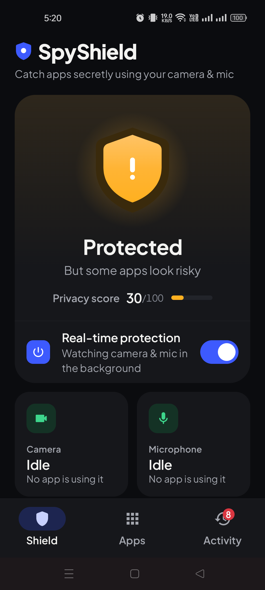
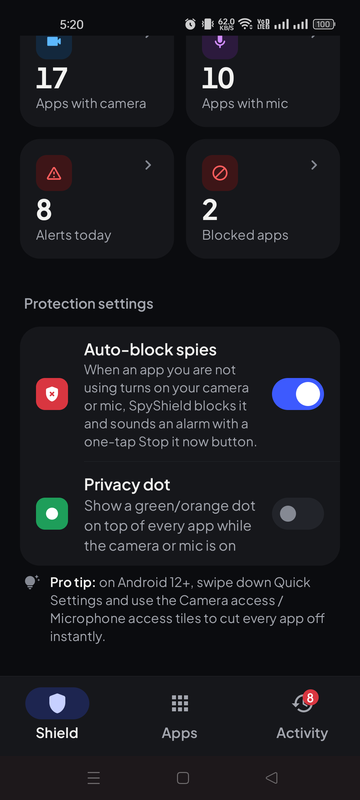

Live camera & mic alerts
Get notified as soon as your camera or microphone turns on, with the name of the app using it.
SpyShield alerts you the moment your camera or mic switches on, names the app behind it, and warns you when something uses them in the background, with the screen off or while your phone is locked.
Android 8.0+ · Free · Open source · No ads · No account

What it does
SpyShield runs in the background and stays calm until something touches your camera or microphone. Then it tells you clearly what happened and what you can do about it.
Get notified as soon as your camera or microphone turns on, with the name of the app using it.
Flags camera or mic use while the screen is off, the phone is locked, you are on the home screen, or a background recording was silenced by Android.
Every app that can reach your camera or mic gets a 0 to 100 spy-risk score, with the reasons spelled out. Pre-installed apps with access are flagged too.
Block an app and get an instant alarm if it touches your camera or mic, with one-tap Revoke access, Force stop and Uninstall.
When SpyShield confidently identifies a background spy, it adds it to your block list and sounds an alarm with a Stop it now button. You tap Force stop to close it.
No internet permission, no account, no ads, no analytics. Your history never leaves your device.
Screenshots
Real screenshots from an OPPO Reno8 5G running Android 14.

Beginner friendly
SpyShield is installed from an APK file rather than the Play Store. It takes about a minute.
On your Android phone, tap Download free APK. A file called SpyShield.apk is saved to your Downloads.
If your browser asks whether to keep the file, tap Download anyway.
Tap the downloaded file. Android may say your browser is not allowed to install apps. Tap Settings, turn on Allow from this source, then go back and tap Install.
If Google Play Protect shows a warning, tap More details, then Install anyway. Warnings like this are normal for any app that does not come from the Play Store.
Open SpyShield and follow the short setup. Switch on Real-time protection, allow Usage Access and notifications.
On Xiaomi, OPPO, Vivo or Samsung phones, set SpyShield's battery usage to Unrestricted so it keeps running.
All versions and release notes: Releases page
An app that guards your privacy should not collect any of it. SpyShield doesn't.
We would rather tell you up front.
Questions
Yes. SpyShield is free and open source under the MIT license. There are no ads, no in-app purchases and no account to create.
No. SpyShield does not even ask for the internet permission, so it cannot send anything off your phone by itself. Your activity history, block list and settings stay in the app's private storage on your device. A privacy report only leaves your phone if you choose to share it.
When an app is on screen, yes. For apps working in the background, Android hides the exact app from normal apps, so SpyShield shows its best guess as "Possible: ..." unless it can identify the app with confidence.
Partly. With the optional Auto-block setting, when SpyShield confidently identifies a background app using your camera or mic, it adds that app to your block list and sounds an alarm with a Stop it now button. Android does not let one app close another, so you tap Force stop yourself. From there you can also revoke its camera or microphone access or uninstall it in one tap.
No. SpyShield works on normal, unrooted phones. Because it does not use root, it cannot silently switch off another app's permissions; instead it takes you straight to the right settings page in one tap.
SpyShield works on Android 8.0 and newer. It has been tested on an OPPO Reno8 5G running Android 14. iPhone is not supported.
Android shows a warning for any app installed from outside the Play Store. That is normal for downloaded APK files. SpyShield's full source code is public on GitHub, so anyone can check what it does.
Usage Access lets SpyShield see which app was on screen at the moment your camera or microphone switched on. That is how it tells normal use (like a video call you started) apart from hidden use. This information never leaves your phone.
Some phones, especially Xiaomi, OPPO, Vivo and Samsung, close background apps to save battery. Open your phone's settings for SpyShield and set its battery usage to Unrestricted.
Free, open source and private. Takes a minute to set up.
Android 8.0+ · Free · Open source · No ads · No account